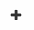

Ajouts/Création
Les ajouts/créations de nouvelles entrées (nouvelle fiche, nouveau contact, nouveau compte…) s’effectue de façon assez similaire dans tout le logiciel. Il est possible d’ajouter des entrées en remplissant des formulaires ou par l’import (traité plus loin dans la partie Imports).
Avertissement
Les possibilités d’ajout diffèrent en fonction des droits associés à chaque utilisateur, si vous ne voyez pas la possibilité de création ou d’ajout, c’est que ce droit est désactivé pour votre profil.
Via le point rouge
Dans la plupart des cas, on peut créer une nouvelle entité en cliquant sur le point rouge en bas à droite de l’écran  .
Il suffit ensuite de choisir l’option qui convient puis de remplir le formulaire qui s’affiche à l’écran sans oublier d’enregistrer.
.
Il suffit ensuite de choisir l’option qui convient puis de remplir le formulaire qui s’affiche à l’écran sans oublier d’enregistrer.
- Valables pour les modules :
Annuaire
Fiche
Tâche
Temps (liste de feuilles de temps, synchronisation, export)
Indicateurs
Budget
Conventions
Cartographie
Utilisateurs
Rôles
Alertes
Fonctions
Exports
Modèles de fiches
Via le plus
Dans d’autres modules, la fonctionnalité d’ajout se fait en cliquant sur un bouton plus en haut à droite du tableau correspondant . Il suffit ensuite de remplir le formulaire qui s’affiche à l’écran sans oublier d’enregistrer.
{kind=link}
- Bouton en haut à droite des tableaux dans les modules suivants :
Dans référentiels et mots clés pour les créer (spécifique à chaque onglet)
Dans un contact pour ajouter une fonction et sa structure (ajout de relation)
Dans structure pour ajouter un employé et sa fonction (ajout de relation)
Dans la liste des types d’absence pour créer un nouveau temps d’absence
Ajout de relation entre les données
A l’intérieur de certains modules, on peut lier des données entre elles (par exemple associer des acteurs à une fiche), dans ce cas l’ajout se fait via un bouton spécifique composé d’un plus et du nom de la donnée (ex :  ) ou via le signe plus à côté du champs à remplir
) ou via le signe plus à côté du champs à remplir  .
.
- Bouton spécifique :
Dans une fiche pour créer des notes (cliquer sur l’icône notes d’abord)
Dans une fiche pour ajouter des membres
Dans une fiche pour ajouter un acteur
Dans une fiche pour créer une feuille de temps
Dans une fiche pour créer une mesure
Dans une fiche pour créer des postes de dépenses et recette et des codes financier
Dans une fiche pour créer un avancement
Dans une fiche pour créer une tâche
Dans une fiche pour créer un emplacement document
Dans un indicateur pour créer une mesure
Dans une convention pour ajouter une ligne reliée à une fiche
Dans une convention pour créer un emplacement document
Dans le module champs pour créer des groupe de champs
Note
Quand il s’agit d”ajouter des relations, il faut que l’entité ait préalablement été créé dans son module. Par exemple, pour ajouter un acteur dans une fiche, il faut d’abord avoir ajouté l’acteur dans le module annuaire -> structure, puis on pourra le choisir dans le module fiche via le bouton
Quand il s’agit de créer une entité reliée, dans ce cas elle peut être créé via le bouton spécifique.
- Signe plus (liste non exhaustive) :
Liaison des mots clés et référentiels dans les modules
Dans une fiche pour rattacher à l’arborescence initiale
Dans une fiche pour ajouter des chefs de projet et des validateurs
Dans une fiche pour ajouter des territoires
Dans une tâche pour ajouter une fiche
Dans une feuille de temps pour ajouter un utilisateur
Dans enveloppe pour ajouter un financeur
Rattachement aux parents
Note
Ce plus sera toujours présenté pour ajouter un élément d’une liste existante, créé en amont dans un autre module ou paramétré par défaut.